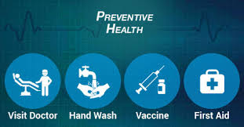

|  | |
|
|
PREVENTIVE HEALTH The art and science of health promotion, disease prevention, disability limitation and rehabilitation. Preventive medicine is a kind of anticipatory medicine. It includes – Health promotion, Treatment and Prevention of Disability as well as protection. Health Communication is the “onward and download” communication of medical and health knowledge. Health education is the foundation of a preventive health care system. Function of Health communication:
Counseling Counseling is a process that can help people understand better and dea their problems and communicate better thru whom they are emotionally enrolled. It can improve and reinforce motivation to change behavior. It can provide support at times of crisis. It helps them face up to their problems. |